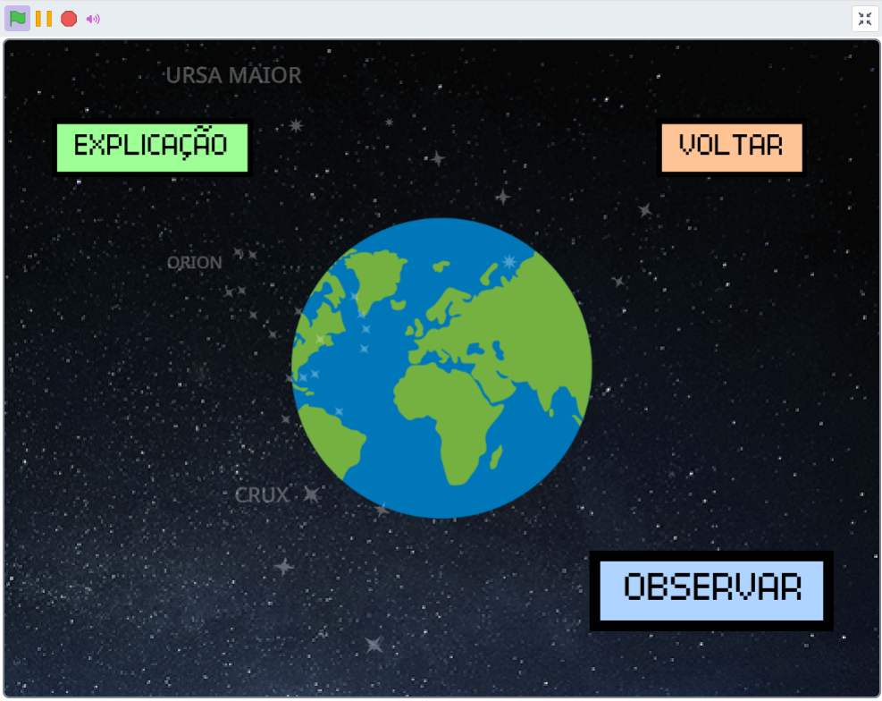

Cultura afro brasileira

Sobre a cultura afro brasileira:
A cultura afro-brasileira é o conjunto de práticas, expressões, crenças, saberes e tradições trazidas pelos povos africanos escravizados e recriadas no Brasil ao longo dos séculos. Ela é um dos pilares da formação da identidade brasileira e se manifesta em praticamente todas as áreas da vida social.
Sobre a conciência negra:
A Consciência Negra é um movimento social, cultural e político voltado para reconhecer, valorizar e fortalecer a identidade, a história e as contribuições das pessoas negras na sociedade. No Brasil, ela está profundamente ligada à luta contra o racismo, à defesa dos direitos da população negra e à afirmação da herança africana como parte essencial da identidade nacional.

Seus povos africanos:
Os povos africanos constituem uma enorme diversidade de culturas, línguas, religiões e formas de organização social. A África não é um bloco único: é um continente vasto, com mais de 1,4 bilhão de habitantes e 54 países, e abriga milhares de etnias e tradições diferentes.